---- Compiling #TidyTuesday Information for 2026-04-14 ----
--- There are 4 files available ---
── Downloading files ───────────────────────────────────────────────────────────
1 of 4: "beaufort_scale.csv"
2 of 4: "birds.csv"
Warning: One or more parsing issues, call `problems()` on your data frame for details,
e.g.:
dat <- vroom(...)
problems(dat)
3 of 4: "sea_states.csv"
4 of 4: "ships.csv"
#beaufort_scale <- tuesdata$beaufort_scale #Not necessary for my analysisbirds <- tuesdata$birds#sea_states <- tuesdata$sea_states #Not necessary for my analysisships <- tuesdata$ships
EDA
# I took a look at the datasets in Positron and the Data Dictionary# I am interested in understanding seasonal changes in birds sightings# I decided to eliminate some of the columns that were mostly empty in both datasets (>50% empty)birds$age =NULLbirds$wan_plumage_phase =NULLbirds$plumage_phase =NULLbirds$sex =NULLbirds$n_feeding =NULLbirds$n_sitting_on_water =NULLbirds$n_sitting_on_ice =NULLbirds$n_flying_past =NULLbirds$n_accompanying =NULLbirds$n_flying_past =NULLbirds$n_following_ship =NULLbirds$moulting =NULLships$direction =NULLships$wind_direction =NULLships$air_temperature =NULLships$pressure =NULLships$sea_surface_temperature =NULLships$depth =NULLships$time =NULL# I also decided to remove "not interesting (for me)" columnsbirds$bird_observation_id =NULLbirds$feeding =NULLbirds$sitting_on_water =NULLbirds$sitting_on_ice =NULLbirds$sitting_on_ship =NULLbirds$flying_past =NULLbirds$accompanying =NULLbirds$following_ship =NULLbirds$naturally_feeding =NULLbirds$in_hand =NULLships$speed =NULLships$direction =NULLships$cloud_cover =NULLships$precipitation =NULLships$wind_speed_class =NULLships$sea_state_class =NULLships$observer =NULLships$census_method =NULLships$hemisphere =NULLships$activity =NULL
Let’s merge both datasets
merged_df <-left_join(birds, ships, by ="record_id")saveRDS(merged_df, here("tidytuesday-exercise/tidytuesday_df.rds"))
Seems like Diomeda is the genus with the majority of observations, I am going to focus on that. I would be interested to understand if thera are any trends I would like to focus on
merged_df %>%filter(genus_code =="DIO") %>%ggplot(aes(x = year, y = count, fill =as.factor(aggr_spc))) +geom_col()
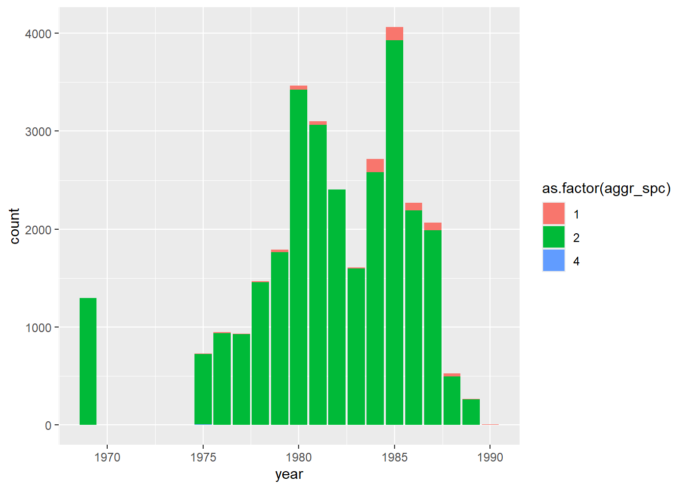
It seems the major Genus observed it is observed as aggregated species (probably not fully distinguisable from afar to the osberver)
Majority of the times Diomedea is either described into 2 species because both of them are very similar
Additionally sightings have two different time frames (before and after 1983)
Let’s see how frequent the sighting were in a map: all sightings from DIO
# Get world map dataworld_map <-map_data("world")#All sightings of DIOmerged_df %>%filter(genus_code =="DIO") %>%group_by(lon_bin, lat_bin) %>%summarise(count =sum(count, na.rm =TRUE), .groups ="drop") %>%ggplot() +geom_polygon(data = world_map, aes(x = long, y = lat, group = group), fill ="gray90", color ="gray50", size =0.1) +geom_raster(aes(x = lon_bin, y = lat_bin, fill = count)) +scale_fill_viridis_c(option ="plasma", direction =-1, alpha =0.5) +coord_quickmap(xlim =c(50, 180), ylim =c(-75, -25)) +theme_bw()
Warning: Using `size` aesthetic for lines was deprecated in ggplot2 3.4.0.
ℹ Please use `linewidth` instead.
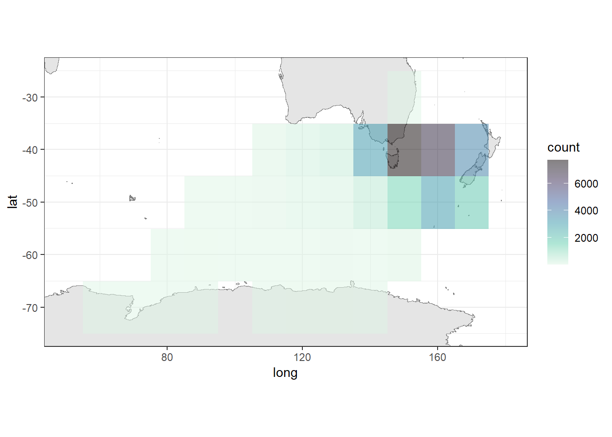
Now let’s look how it the two previous groups (before and after 1983) had different behaviors
#Sightings before 1983merged_df %>%filter(genus_code =="DIO", year <=1983) %>%group_by(lon_bin, lat_bin) %>%summarise(count =sum(count, na.rm =TRUE), .groups ="drop") %>%ggplot() +geom_polygon(data = world_map, aes(x = long, y = lat, group = group), fill ="gray90", color ="gray50", size =0.1) +geom_raster(aes(x = lon_bin, y = lat_bin, fill = count)) +scale_fill_viridis_c(option ="plasma", direction =-1, alpha =0.5) +coord_quickmap(xlim =c(50, 180), ylim =c(-75, -25)) +theme_bw()
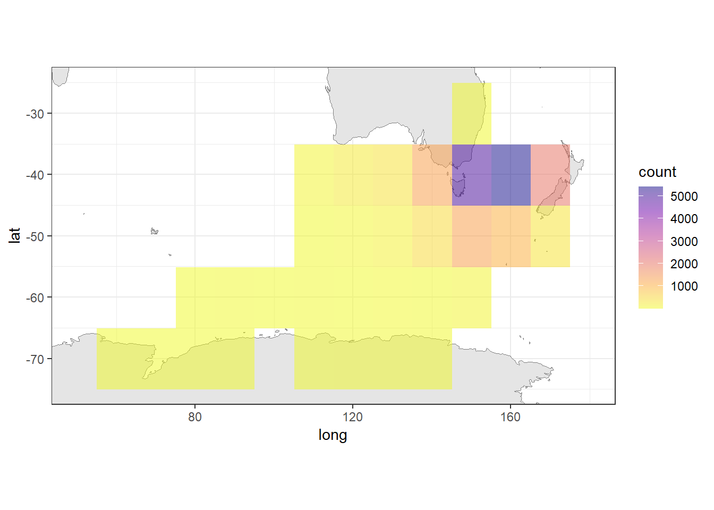
#Sightings after 1983merged_df %>%filter(genus_code =="DIO", year >1983) %>%group_by(lon_bin, lat_bin) %>%summarise(count =sum(count, na.rm =TRUE), .groups ="drop") %>%ggplot() +geom_polygon(data = world_map, aes(x = long, y = lat, group = group), fill ="gray90", color ="gray50", size =0.1) +geom_raster(aes(x = lon_bin, y = lat_bin, fill = count)) +scale_fill_viridis_c(option ="plasma", direction =-1, alpha =0.5) +coord_quickmap(xlim =c(50, 180), ylim =c(-75, -25)) +theme_bw()
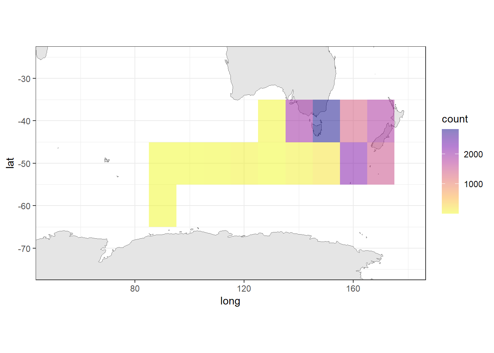
Ok, from this information, I can see there are trends from each “wave” are differents (before and after 1983)
Let’s keep looking, now within each of the “waves” per season.
#Sightings before 1983 per seasonmerged_df %>%filter(genus_code =="DIO", year <=1983) %>%group_by(lon_bin, lat_bin, season) %>%summarise(count =sum(count, na.rm =TRUE), .groups ="drop") %>%ggplot() +geom_polygon(data = world_map, aes(x = long, y = lat, group = group), fill ="gray90", color ="gray50", size =0.1) +geom_raster(aes(x = lon_bin, y = lat_bin, fill = count)) +scale_fill_viridis_c(option ="plasma", direction =-1, alpha =0.5) +coord_quickmap(xlim =c(50, 180), ylim =c(-75, -25)) +theme_bw() +facet_wrap(~season)
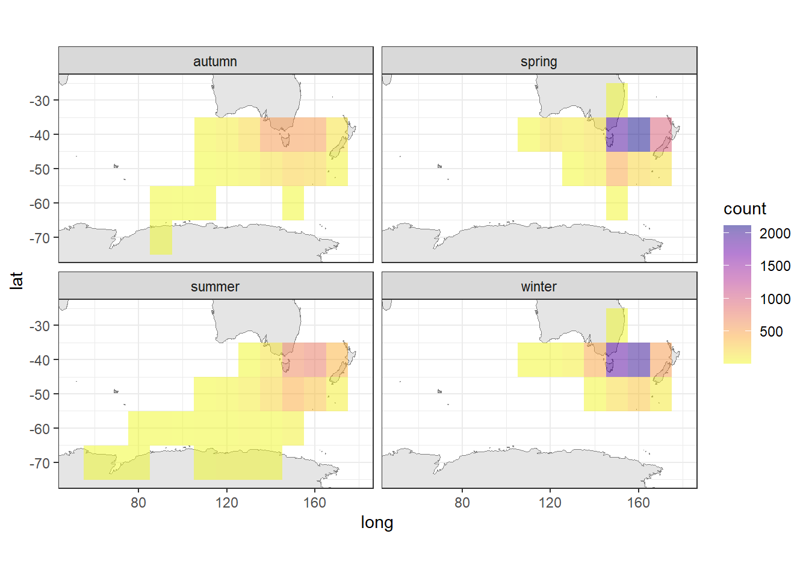
#Sightings after 1983 per seasonmerged_df %>%filter(genus_code =="DIO", year >1983) %>%group_by(lon_bin, lat_bin, season) %>%summarise(count =sum(count, na.rm =TRUE), .groups ="drop") %>%ggplot() +geom_polygon(data = world_map, aes(x = long, y = lat, group = group), fill ="gray90", color ="gray50", size =0.1) +geom_raster(aes(x = lon_bin, y = lat_bin, fill = count)) +scale_fill_viridis_c(option ="plasma", direction =-1, alpha =0.5) +coord_quickmap(xlim =c(50, 180), ylim =c(-75, -25)) +theme_bw() +facet_wrap(~season)
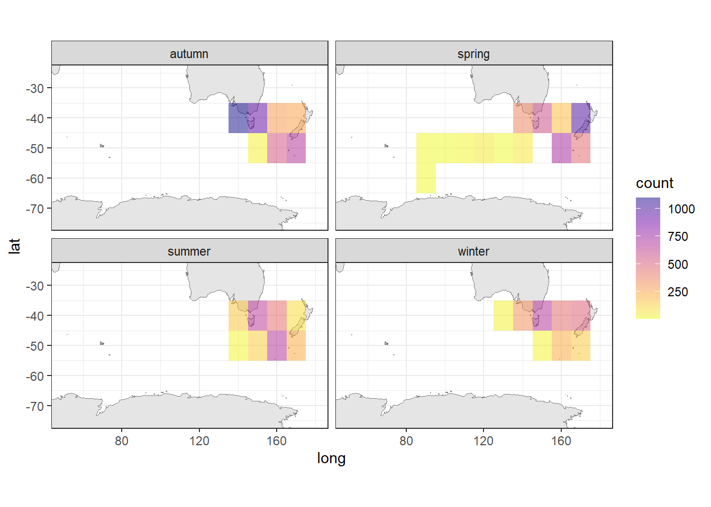
It seems there is also a seasonal effect, we will take this into account for modeling
From this information we can see the most “common” coordinates for sightings for DIO is 150, -40 with 7749 birds observed there.
I am going to use this to measure “spread” I will use this as my base coordinate group and measure the distance between this high frequency coordinate to the actual
ANALYSIS:
Hypothesis: The spread of DIO is greater in warmer months than in cold months/seasons.
Question: Is the spread getting smaller over the years?
#Let's calculate distance#Setting the main coordinate binslat_i <--40lon_i <-150# As the Earth is a globe, we need a special formula to calculate distance from A to Blibrary(geosphere)DIO_df <- merged_df %>%filter(genus_code =="DIO") DIO_df$species_scientific_name =NULLDIO_df$species_common_name =NULLDIO_df$species_abbreviation =NULLDIO_df$genus_code =NULLDIO_df$genus =NULLDIO_df <- DIO_df %>%mutate(spreadkm =1+distHaversine(cbind(lon_i, lat_i), cbind(longitude, latitude) )/1000,spread_rounded =round(spreadkm/10, digits =0) *10,wave =if_else(year >1983, 2, 1) )
After creating the spread indicator, I am creating histograms to understand trends
`stat_bin()` using `bins = 30`. Pick better value with `binwidth`.
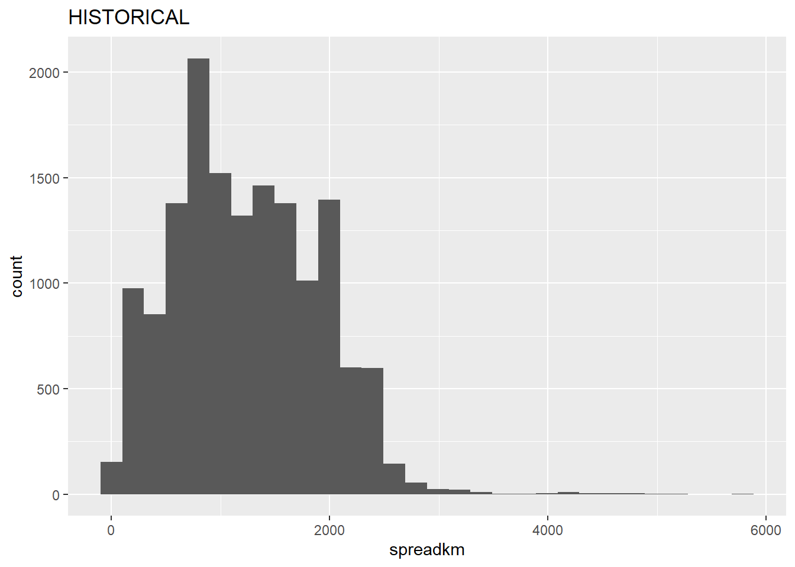
#Histograms to understand spread across both wavesDIO_df %>%ggplot(aes(x = spreadkm)) +geom_histogram() +facet_wrap(~ wave) +labs(title ="HISTORICAL PER WAVE")
`stat_bin()` using `bins = 30`. Pick better value with `binwidth`.
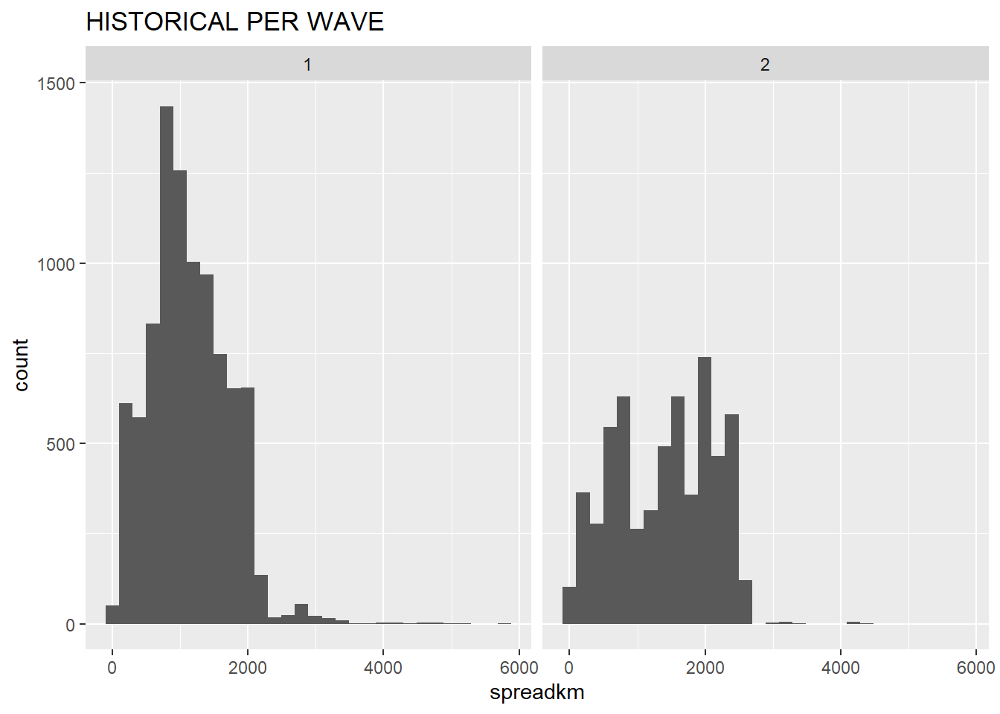
#Seasons in wave 1DIO_df %>%filter(wave ==1) %>%ggplot(aes(x = spreadkm)) +geom_histogram() +facet_wrap(~ season) +labs(title ="WAVE 1 per season")
`stat_bin()` using `bins = 30`. Pick better value with `binwidth`.
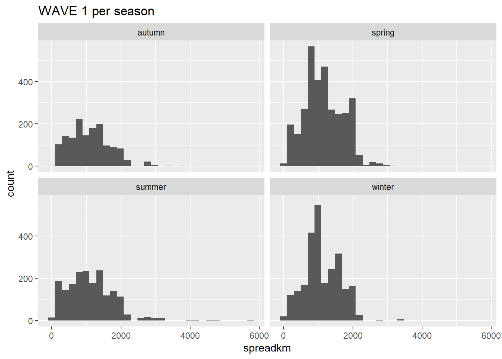
#Seasons in wave 2DIO_df %>%filter(wave ==2) %>%ggplot(aes(x = spreadkm)) +geom_histogram() +facet_wrap(~ season) +labs(title ="WAVE 2 per season")
`stat_bin()` using `bins = 30`. Pick better value with `binwidth`.
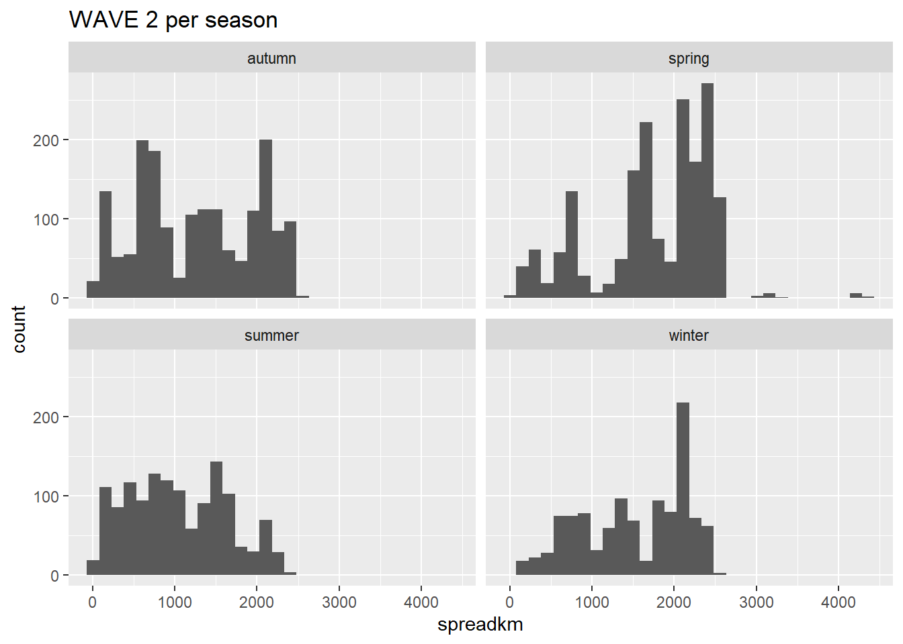
From this information we can see that wave 1 have a wider spread in the autumn and summer. Wave 2 seems more compact across seasons, spring has the wider spread. Which it confirms what we observed on the maps.
All of the trends are right skewed regardless of the season or wave. Let’s try to fix that by transforming the data to log2
`stat_bin()` using `bins = 30`. Pick better value with `binwidth`.
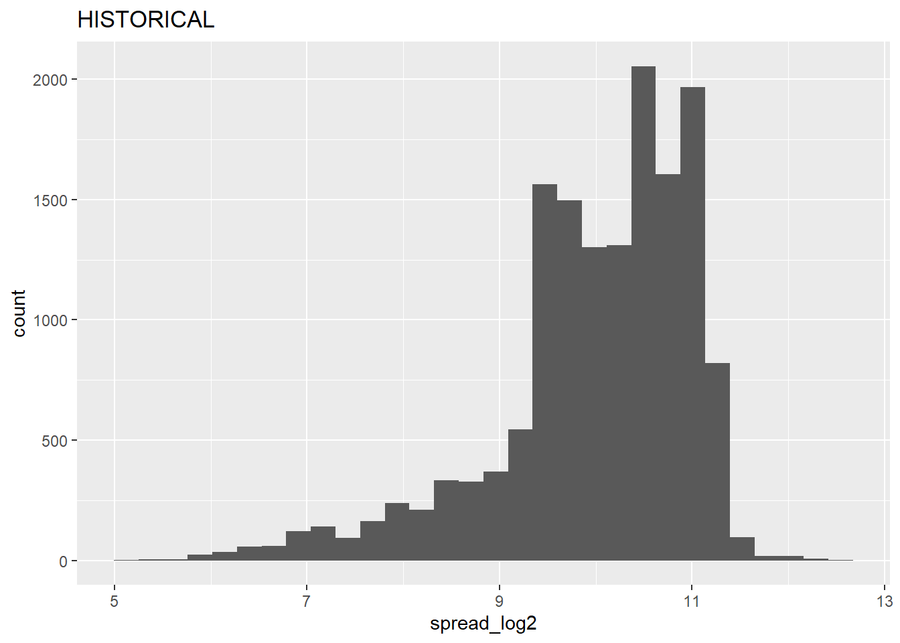
#Histograms to understand spread across both wavesDIO_df %>%ggplot(aes(x = spread_log2)) +geom_histogram() +facet_wrap(~ wave) +labs(title ="HISTORICAL PER WAVE")
`stat_bin()` using `bins = 30`. Pick better value with `binwidth`.
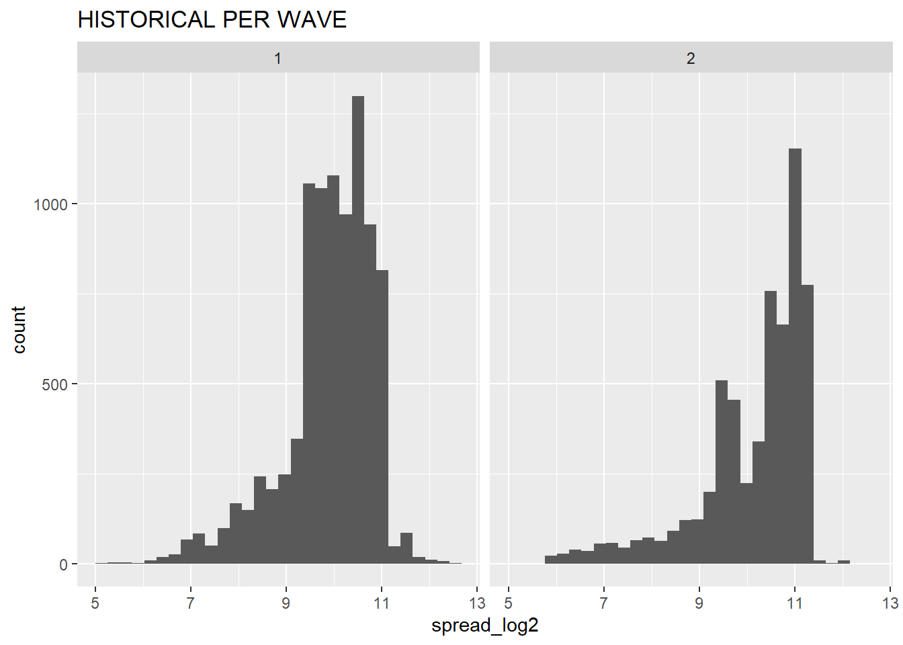
#Seasons in wave 1DIO_df %>%filter(wave ==1) %>%ggplot(aes(x = spread_log2)) +geom_histogram() +facet_wrap(~ season) +labs(title ="WAVE 1 per season")
`stat_bin()` using `bins = 30`. Pick better value with `binwidth`.
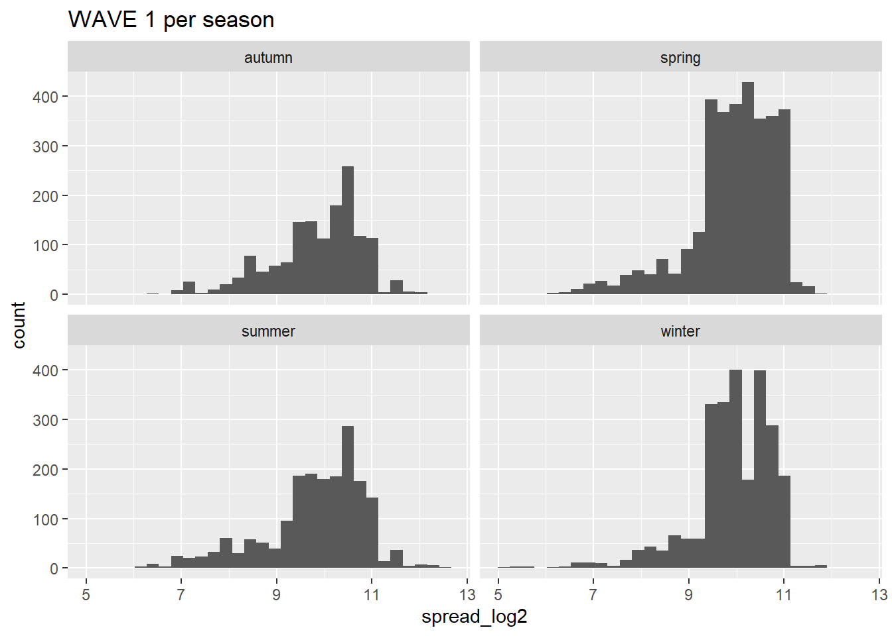
#Seasons in wave 2DIO_df %>%filter(wave ==2) %>%ggplot(aes(x = spread_log2)) +geom_histogram() +facet_wrap(~ season) +labs(title ="WAVE 2 per season")
`stat_bin()` using `bins = 30`. Pick better value with `binwidth`.
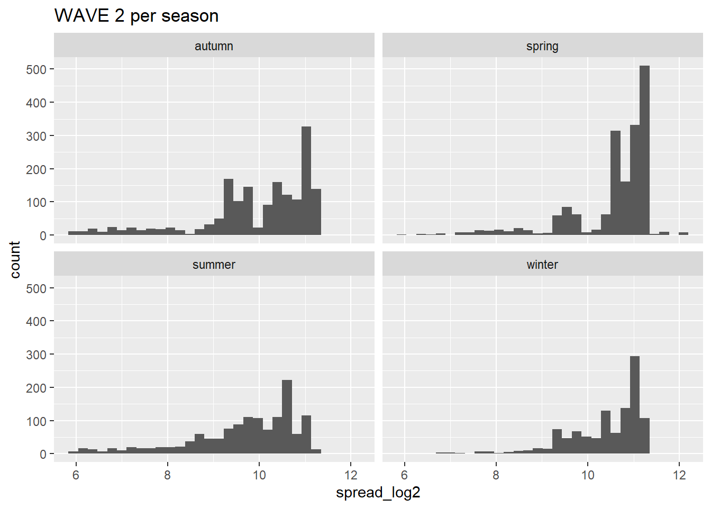
Transforming the data to log2 it helps the distribution
MODELING
Now let’s see if we can predict spread based on known predictors
LM approach
#Making number variables into factorsDIO_df %>%mutate(year =as.factor(year),month =as.factor(month) )
# A tibble: 14,987 × 15
record_id count date latitude longitude season aggr_spc year month
<dbl> <dbl> <date> <dbl> <dbl> <chr> <dbl> <fct> <fct>
1 1083001 6 1975-10-15 -45.9 165. spring 4 1975 10
2 1083001 2 1975-10-15 -45.9 165. spring 2 1975 10
3 1084001 10 1975-11-03 -35.5 125 spring 2 1975 11
4 1084001 2 1975-11-03 -35.5 125 spring 2 1975 11
5 1084002 10 1975-11-04 -37.7 132. spring 2 1975 11
6 1084002 2 1975-11-04 -37.7 132. spring 2 1975 11
7 1084003 14 1975-11-08 -40 162 spring 2 1975 11
8 1084003 4 1975-11-08 -40 162 spring 2 1975 11
9 1086003 4 1975-11-17 -35.2 168 spring 2 1975 11
10 1086003 2 1975-11-17 -35.2 168 spring 2 1975 11
# ℹ 14,977 more rows
# ℹ 6 more variables: lat_bin <dbl>, lon_bin <dbl>, spreadkm <dbl>,
# spread_rounded <dbl>, wave <dbl>, spread_log2 <dbl>
#Creating a null linear modellm_null <-linear_reg() %>%set_engine("lm") %>%fit(spread_log2 ~1, data = DIO_df)#Creating models with known variableslm_fit1 <-linear_reg() %>%set_engine("lm") %>%fit(spread_log2 ~ wave + season + year + month + count + latitude + longitude, data = DIO_df)lm_fit2 <-linear_reg() %>%set_engine("lm") %>%fit(spread_log2 ~ wave + season + year + month, data = DIO_df)
Getting the predictions
#Predidiction and differences for each fitDIO_df <- DIO_df %>%mutate(pred0 =predict(lm_null, new_data = DIO_df, type ="numeric")$.pred,pred1 =predict(lm_fit1, new_data = DIO_df, type ="numeric")$.pred,pred2 =predict(lm_fit2, new_data = DIO_df, type ="numeric")$.pred ) %>%mutate(res0 = pred0 - spread_log2,res1 = pred1 - spread_log2,res2 = pred2 - spread_log2 )
Plotting predicted vs actual
ggplot(DIO_df, aes(x = spread_log2, y = pred0)) +geom_point() +theme_bw()
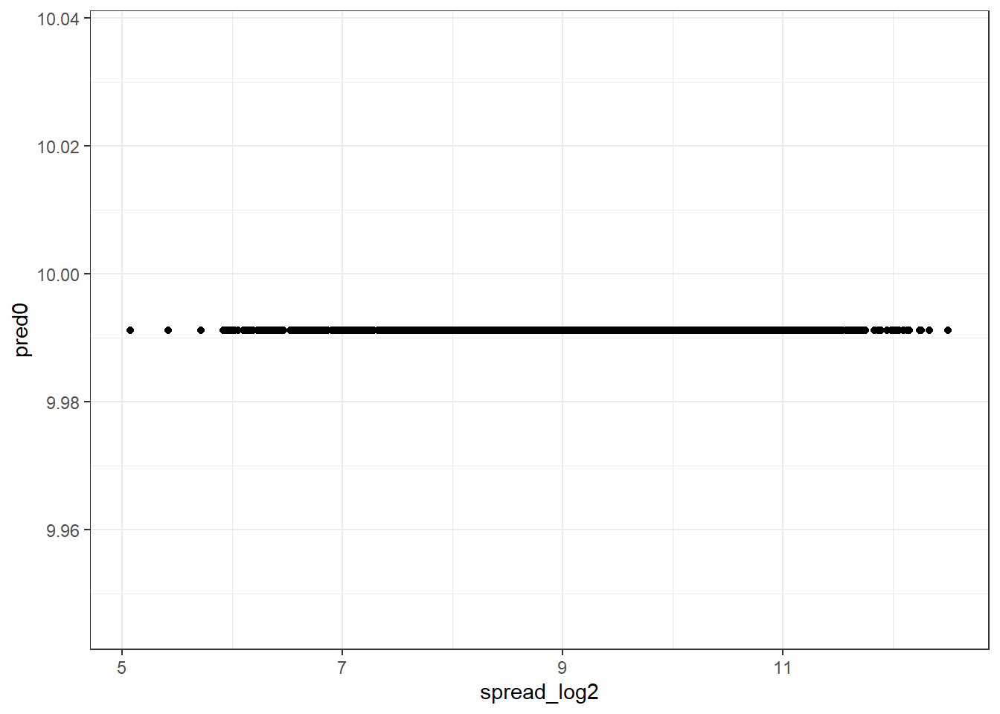
ggplot(DIO_df, aes(x = spread_log2, y = pred1)) +geom_point() +theme_bw()
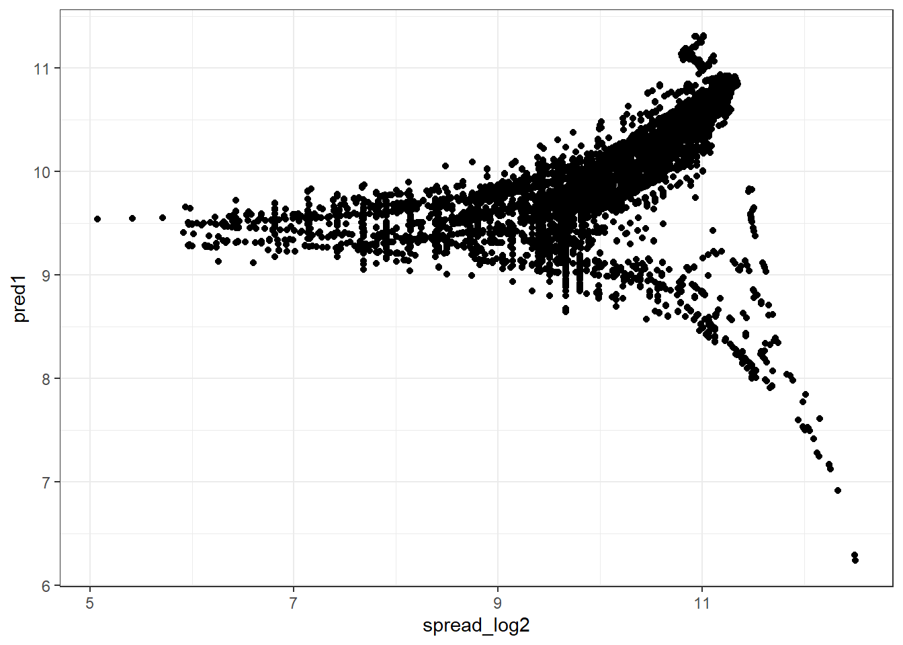
ggplot(DIO_df, aes(x = spread_log2, y = pred2)) +geom_point() +theme_bw()
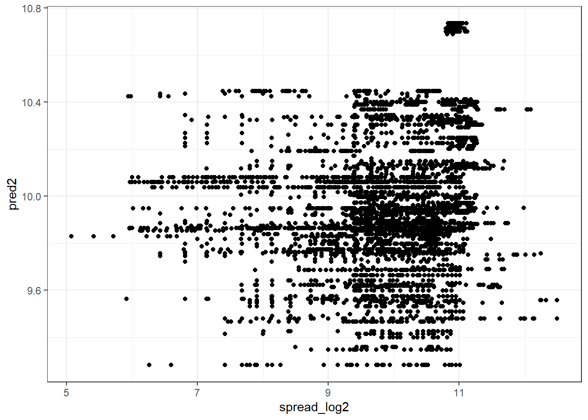
Plotting the residuals
ggplot(DIO_df, aes(x = spread_log2, y = res0)) +geom_point() +theme_bw()
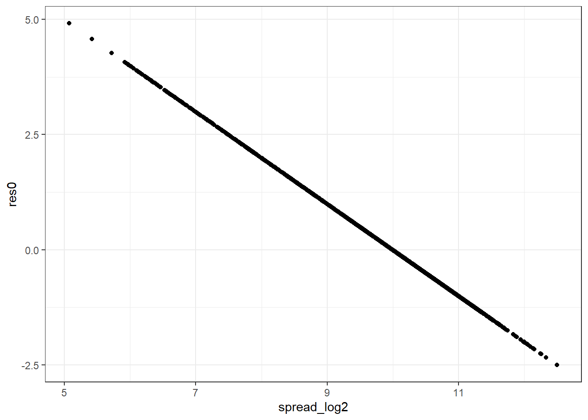
ggplot(DIO_df, aes(x = spread_log2, y = res1)) +geom_point() +theme_bw()
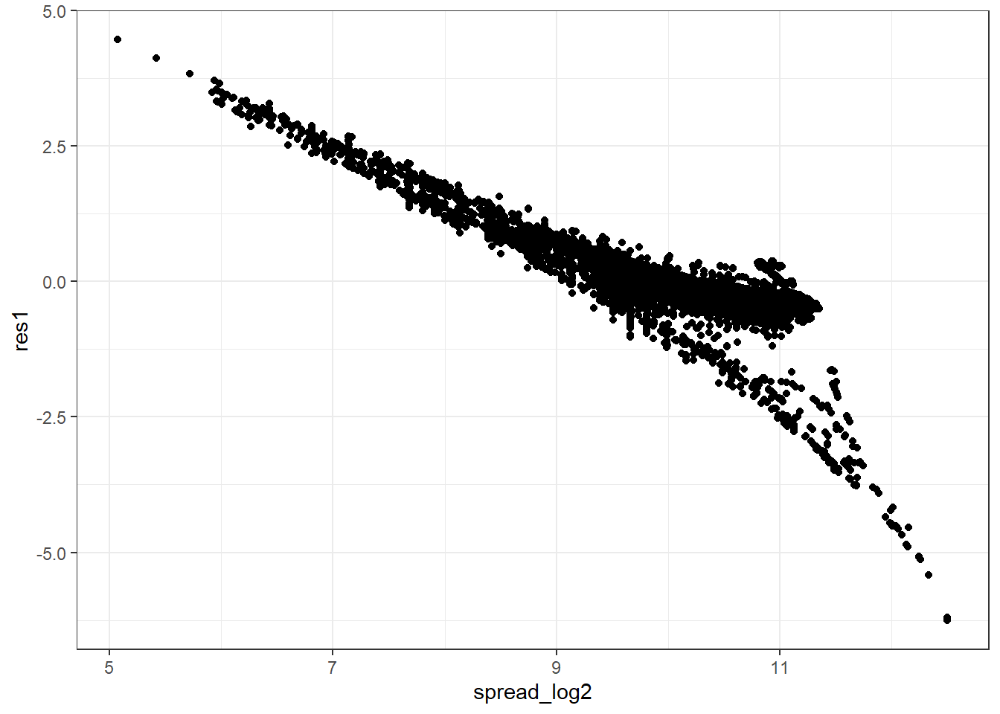
ggplot(DIO_df, aes(x = spread_log2, y = res2)) +geom_point() +theme_bw()
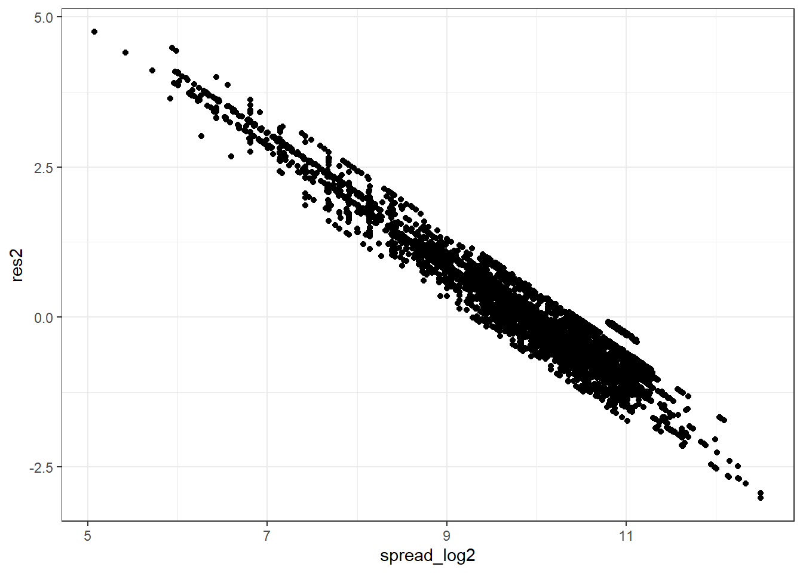
It seems like lm is not a good approach for this dataset, it seems there is something underlaying with the data that I am not able to determine why the prediction power of the lm is just not working. I am going to try to fit other types.
LASSO
#Set the seedrngseed <-1234set.seed(rngseed)#Lasso fitlasso_fit <-linear_reg(penalty =0.1) %>%set_engine("glmnet") %>%fit(spread_log2 ~ wave + season + year + month + count + latitude + longitude, data = DIO_df)# Creating prediction and residualsDIO_df <- DIO_df %>%mutate(lasso_pred =predict(lasso_fit, new_data = DIO_df)$.pred,lasso_res = lasso_pred - spread_log2 )# New Pred vs Actual Plotggplot(DIO_df, aes(x = spread_log2, y = lasso_pred)) +geom_point() +labs(title ="LASSO predictions") +theme_bw()
LASSO also resembles a lot LM approach, therefore it is not a good model for this dataset. Let’s try with rand_forest
RANDOM FOREST
#Set the seedset.seed(rngseed)# Define the model specrf_spec <-rand_forest(mode ="regression") %>%set_engine("ranger", seed = rngseed) # Fit the modelrf_fit <- rf_spec %>%fit(spread_log2 ~ wave + season + year + month + count + latitude + longitude, data = DIO_df)# Model summaryrf_fit
parsnip model object
Ranger result
Call:
ranger::ranger(x = maybe_data_frame(x), y = y, seed = ~rngseed, num.threads = 1, verbose = FALSE)
Type: Regression
Number of trees: 500
Sample size: 14987
Number of independent variables: 7
Mtry: 2
Target node size: 5
Variable importance mode: none
Splitrule: variance
OOB prediction error (MSE): 0.01169935
R squared (OOB): 0.9888883
# Creating prediction and residualsDIO_df <- DIO_df %>%mutate(rf_pred =predict(rf_fit, new_data = DIO_df)$.pred,rf_res = rf_pred - spread_log2 )# New Pred vs Actual Plotggplot(DIO_df, aes(x = spread_log2, y = rf_pred)) +geom_point() +geom_abline(slope =1, intercept =0, color ="red", linetype ="dashed") +labs(title ="Random Forest predictions") +theme_bw()
The random forest approach seems to capture much better the behavior of the dataset. We can see a slight trend before spread 7 (spread_log2) but the rest of the residuals seems random.
RMSE for all models using a training dataset
set.seed(rngseed)# Put 3/4 of the data into the training set data_split <-initial_split(DIO_df, prop =0.75)# Create data frames for the two sets:train_data <-training(data_split)test_data <-testing(data_split)
# Generating predictions and RMSE per modelpredict_lm <-predict(lm_fit1, train_data) %>%bind_cols(train_data)rmse_lm <-rmse(predict_lm, truth = spread_log2, estimate = .pred)predict_lasso <-predict(lasso_fit, train_data) %>%bind_cols(train_data)rmse_lasso <-rmse(predict_lasso, truth = spread_log2, estimate = .pred)predict_rf <-predict(rf_fit, train_data) %>%bind_cols(train_data)rmse_rf <-rmse(predict_rf, truth = spread_log2, estimate = .pred)rmse_lm
# A tibble: 1 × 3
.metric .estimator .estimate
<chr> <chr> <dbl>
1 rmse standard 0.858
rmse_lasso
# A tibble: 1 × 3
.metric .estimator .estimate
<chr> <chr> <dbl>
1 rmse standard 0.886
rmse_rf
# A tibble: 1 × 3
.metric .estimator .estimate
<chr> <chr> <dbl>
1 rmse standard 0.0924
the RMSE from the LM and LASSO is almost 10X higher than the RMSE from rand_forest()
CROSS VALIDATION
set.seed(rngseed)#Creating the foldsfolds <-vfold_cv(DIO_df, v =10)folds
#### For this exercise, I investigated the spatial distribution of the Diomedea genus to determine if seasonal changes and historical timeframes influenced their “spread” from a central high-frequency sighting coordinate. My findings supported the hypothesis that a seasonal effect exists; however, while “Wave 1” (pre-1983) showed a wider spread during autumn and summer, “Wave 2” (post-1983) exhibited a more compact distribution with the greatest spread shifting to the spring, suggesting a potential contraction of observed range over the years. Through the modeling process, I learned that linear approaches like LM and LASSO were insufficient for capturing these complex spatial trends, as evidenced by high RMSE values. In contrast, the Random Forest model successfully captured the non-linear relationships in the data, achieving a significantly lower RMSE and an R-squared of 0.994. Once I did cross validation I further corroborated the RF model model perforamce matched the RMSE closely to the RMSE of the training data set. Making it a good model even for unseen data.